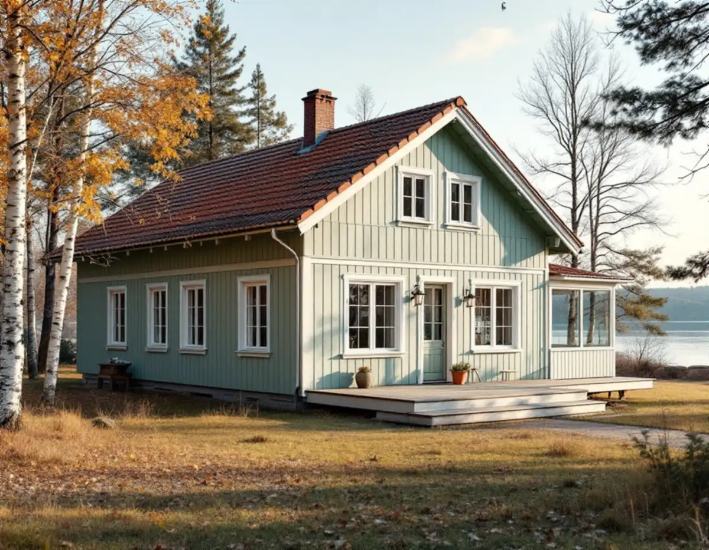
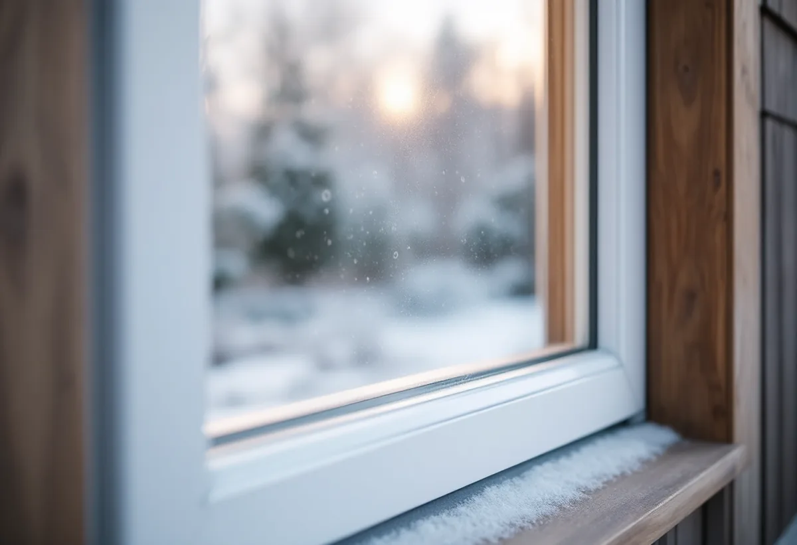

Besök och mätning
Vi mäter upp fönstren, kontrollerar karmar och bröstningar och ser hur huset ventileras.
På östra Ekerö har många sommarhus blivit åretruntbostäder, och bredvid dem ligger villaområden från 1960- och 1970-talen. I båda fallen är fönstren ofta den del av huset som märks mest en kall vinterdag. Geal Entreprenad AB byter och renoverar fönster på Ekerö, Stenhamra och på öarna runt omkring, och lämnar ett skriftligt kostnadsförslag efter ett gratis platsbesök.

Ekerö kommuns kulturmiljöprogram från 2015 beskriver östra Ekerö som ett område där exploateringstrycket är högt och där det hela tiden sker förtätningar. Områden med sommarbostäder har de senaste decennierna permanentats och förtätats. Som exempel nämns Älvnäs, Gällstaö och Erikssten, där sommarvillor och sportstugor från 1900-talet har byggts om eller rivits.
Det dominerande inslaget är ändå villa- och radhusbebyggelse från andra halvan av 1900-talet. Programmet nämner Väsby med enhetlig bebyggelse från tidigt 1970-tal och Närlunda, som domineras av villor från 1960-talet. På östra Ekerö ligger också Ekerö centrum, ritat av Ralph Erskine och invigt 1991, som ett av landets yngsta kommuncentrum.
Programmets råd för östra Ekerö är att befintliga byggnader bör respekteras när det gäller proportioner, fasadfärg, tak och byggnadsdetaljer som fönster, panel, entréer och räcken. Rådet gäller uttryckligen både flerfamiljshusen i centrum och villa- och sportstugebebyggelsen. Ett fönsterbyte i ett enhetligt område som Väsby bör alltså ge samma intryck från gatan som grannhusens fönster.

Boverket förklarar att ju lägre värmegenomgångstal, U-värde, ett fönster har, desto mindre kall luft faller ner längs rutan mot golvet. Den kalla luften kallas kallras och känns som drag. Boverkets tumregel är att det inte uppstår något kallras om U-värdet är lägre än 1,0.
Samtidigt isolerar även de bästa fönstren bara ungefär lika bra som fem centimeter vanlig isolering, och ett gammalt fönster kan släppa igenom betydligt mer. I ett hus som en gång byggdes för sommarbruk och som nu ska värmas hela året blir fönstren därför en stor del av värmeförlusten, särskilt om de är många och stora mot sjön.
Boverket råder att välja fönster med lågt U-värde för hela konstruktionen, alltså glas, båge och karm tillsammans, och att kontrollera märkningslappen när fönstren levereras. Det är också värt att dokumentera husets energianvändning före bytet, så att det går att se vad det gav under det första året.
Efter ett fönsterbyte märker en del husägare att rutorna blir immiga på morgonen. Boverket skiljer på två fall. Kondens på insidan är ett tecken på att ventilationen kan behöva förbättras. Kondens på utsidan är däremot inte ett fel utan ett kvitto på att fönstret isolerar bra, eftersom det yttre glaset blir kallare. Den försvinner efter ett par timmar.
Boverket nämner att solavskärmning som skuggar fönstret mot natthimlen kan minska kondensen på utsidan. I ett hus vid Mälaren med fri utsikt mot vattnet går det sällan att undvika helt, och det är bra att veta om innan man väljer det bäst isolerande glaset.
Kondensen på insidan är viktigare att ta på allvar. Har huset självdrag påpekar Boverket att luft som läckt in kring otäta fönster kan ha varit en del av tilluften. När de nya fönstren är täta behöver tilluften ordnas på annat sätt, och vi går igenom det vid besöket.
Ekerö kommun skriver att fasadändringar på ett en- eller tvåbostadshus inte kräver bygglov, utom när fastigheten ligger i ett område som bedömts som särskilt värdefullt. Ett byte till fönster i samma öppningar är därför i de flesta fall en lovfri åtgärd, men varsamhetskravet gäller.
Ska ett fönster göras större för att få in mer ljus eller utsikt blir det en annan sak. Kräver ändringen nya reglar i väggen räknar kommunen det som en väsentlig ändring av bärande konstruktion, och då ska den anmälas. Kräver åtgärden även bygglov hanteras allt i samma ansökan. Är du osäker kan du skicka ett foto på huset till kommunen och beskriva ändringen.
När fönstren sitter i en fasad som också behöver ses över kan det löna sig att göra båda samtidigt. Mer om det finns under fasadrenovering på Ekerö.
Vi mäter upp fönstren, kontrollerar karmar och bröstningar och ser hur huset ventileras.
U-värde, glas, indelning och kulör väljs efter huset och grannhusen i området.
Vi kontrollerar om området är särskilt värdefullt och om någon öppning ska ändras.
Fönster, montage, foder, bleck och eventuella ventiler redovisas var för sig.
Fönstren byts i etapper så att huset inte kyls ner, med drevning och tätning runt karmen.
Vi går igenom fönstren med dig och visar hur ventilationen och underhållet fungerar.
Skatteverket godkänner rotavdrag för att reparera eller byta ut fönster och för att montera isolerglas och bullerglas. Avdraget gäller även ett fritidshus som du äger. Det är 30 procent av arbetskostnaden, med ett tak på 50 000 kr per person och år och 75 000 kr för rot och rut tillsammans.
Själva fönstren, resor och utrustning räknas inte. Geal drar avdraget direkt på fakturan.
Antal fönster och deras storlek, vilket U-värde och glas som väljs, om någon öppning ska göras större, hur mycket foder, bleck och bröstningar som behöver göras om och om ventilationen behöver kompletteras. Läget på tomten och avståndet påverkar också. Efter ett gratis platsbesök får du ett skriftligt kostnadsförslag.
Byta eller renovera fönster.
Fönsterbyte i Stockholm →Takbyte, takbesiktning och plåtarbeten.
Takläggare på Ekerö →Stenhamra, Kungshatt och Adelsö.
Takrenovering på Ekerö →Utanför plan, strandskydd och eget avlopp.
Attefallshus på Ekerö →Anmälan, mjukt vatten och eget avlopp.
Badrumsrenovering på Ekerö →Nytt hus, vattenskydd och bergvärme.
Byggföretag på Ekerö →Väder, säsong och torktider på öarna.
Fasadmålning på Ekerö →Egnahem, villaområden och äldre gårdar på Ekerö.
Fasadrenovering på Ekerö →Villor i Stenhamra och omgjorda sommarhus.
Golvläggare på Ekerö →Slipa trägolv som ligger på golvvärme.
Golvslipning på Ekerö →Vedspis, egen brunn och nya sopsorteringen.
Köksrenovering på Ekerö →Sommarvillor, stugor och villor på Mälaröarna.
Målare på Ekerö →Takvatten, solceller och plåttak på Ekerö.
Plåtslagare på Ekerö →Altan, gäststuga och snickeri nära Mälaren.
Snickare på Ekerö →Kartan, solcellerna och skorstenen.
Takbyte på Ekerö →Tapet på timmer, papp och skivor.
Tapetsering på Ekerö →Kartan, inglasningen och registret.
Tillbyggnad på Ekerö →